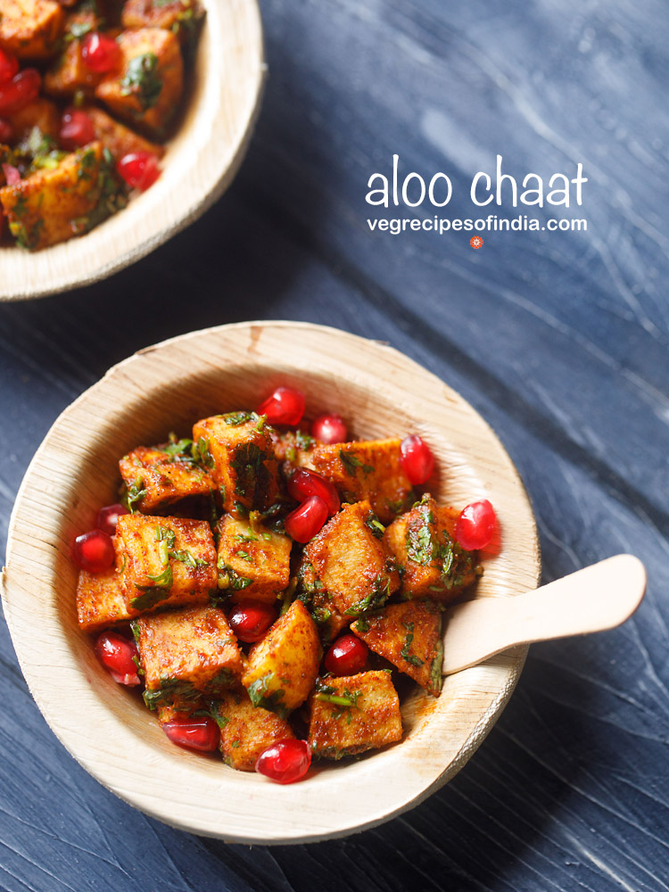

Aloo chat
Content :-

About aloo chat
Aloo chaat is fried crispy potato cubes tossed in spicy and sweet chutneys, ground spice powders usually topped with curd (yogurt), pomegranate arils and sev. This crispy, savory aloo chat is a mouth-watering Indian street food snack packed with flavors and taste. Aloo chat is a crowd-pleaser as it has a variety of flavors. It is tangy, sweet, spicy, salty and can be easily customized to your taste. Make these finger-licking vegan potato snack in just 15 minutes.
Ingredients
- Potatoes
- ¼ teaspoon of black pepper powder
- ½ teaspoon of Kashmiri red chili powder or sweet paprika
- ½ teaspoon of roasted cumin powder
- ½ teaspoon of dry mango powder (amchur powder)
- ½ teaspoon of chaat masala powder
- black salt or pink salt or regular white salt to taste
how to make aloo chat
- Rinse 3 medium sized potatoes (250 grams) in fresh water and then peel them. Chop the potatoes in small bite sized cubes.
- Heat 4 tablespoons of oil in a frying pan or kadai on a medium heat. Add the potato cubes for frying. Use any neutral flavored with a high smoke point for frying.
Mix with the oil and begin to fry them. Remember to fry at medium heat.
Warm or a cooler temperature of the oil will make the potatoes soggy with oil. A very hot oil will brown the outer crust of the potato cubes quickly but they will be undercooked from the center.
- When one side becomes golden, turn the potatoes over and fry them on the other side. Keep on turning the potatoes at intervals using a slotted spoon until they are fried evenly.
- Fry until the potatoes are crispy and golden. Make sure the potato cubes are not raw or half-cooked on the inside.
- Once the potatoes are tender, crisp and golden then remove them with a slotted spoon draining as much oil in the pan as possible.
- Place fried potato cubes on kitchen paper towels to absorb extra oil. Then, fry the second batch of potatoes if you have used a small or medium-sized wok or pan.
- When the potatoes are still hot take all of them in a mixing bowl. Then add the following ground spice powders:¼ teaspoon of black pepper powder ½ teaspoon of Kashmiri red chili powder or sweet paprika½ teaspoon of roasted cumin powder½ teaspoon of dry mango powder (amchur powder) ½ teaspoon of chaat masala powderblack salt or pink salt or regular white salt to taste
- Next, add 1 tablespoon of finely chopped mint leaves and 2 tablespoons of finely chopped coriander leaves (cilantro).
- Then add 1 tablespoon of sweet tamarind chutney. Add less or more to suit your taste. At this step you can add coriander chutney or green chutney if you want.
- Toss and mix everything very well. The chutney, spice powders and lemon juice should coat the fried potatoes evenly. Taste the potatoes and adjust the seasoning to your taste.
Pro tips :
You can also air-fry the potatoes instead of frying and follow the rest of the recipe. I have tried this air-frying method and the potatoes tasted just as delicious and they were a bit lighter compared to fried aloo chat.Simply coat the potato cubes with 1 to 2 tablespoons oil. Preheat your air-fryer for 5 minutes at 180 degrees Celsius. Then air-fry the potato cubes at a moderately hot temperature of 180 degrees Celsius/356 Fahrenheit until crispy and golden.Do remove the air-fryer basket a couple of times while air-frying. Gently shake or toss the basket or turn over the potato cubes with a spoon, spatula or fork. Place the basket with the potatoes back into the air-fryer and continue to air-fry.